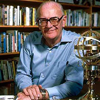
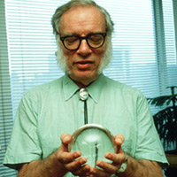

Hvad er science fiction
Selv om der ikke som sådan er en enkelt accepteret definition af science fiction beskæftiger science fiction sig normalt med verdener der adskiller sig fra vores egen, som følge af nye videnskabelige opdagelser, nye teknologier eller forskellige sociale systemer.
Man ser så på konsekvenserne af denne ændring. På grund af denne brede definition kan science fiction bruges til at overveje spørgsmål om videnskab, politik, sociologi og filosofi sindet, samt spørgsmål om fremtiden Det er nogle gange svært at skelne science fiction fra fantasy.
Dette skyldes, at definitionen af videnskab har ændret sig drastisk over tid, og som Arthur C. Clarke så berømt udtalte, "Enhver tilstrækkeligt avanceret teknologi er umulig at skelne fra magi".
En af de største astronomer i det 17. århundrede, Johannes Kepler, måtte påberåbe dæmoner for at forklare, hvordan en person kunne rejse til månen i sin roman Somnium, og det 18. århundredes forfatter, Samuel Madden, brugte engle til at forklare tidsrejser fra år 1998
 En grim profeti
H.G Wells ”The World Set Free” er måske det bedste eksempel på profetisk science fiction. Den blev udgivet i 1914, og Wells beskrev en ny type bombe drevet af kernereaktioner, - han forudsagde det ville blive opdaget i 1933, og først detonerede i 1956. Fysiker Leó Szilárd læst bogen og patenterede ideen. Szilárd var senere direkte ansvarlig for oprettelsen af Manhattan Project, som førte til atombomberne som blev smidt over Japan i 1945
Science Fiction set fra et historisk perspektiv
Science Fiction set fra et historisk perspektiv Da der ikke er nogen enkelt accepteret definition af science fiction, er der ingen måde at kunne definere den første science fiction-historie som blev skrevet. De fleste religiøse tekster og digte har elementer af science fiction, især dem, der beskriver skabelsen eller ødelæggelse af universet, og mange af de beskrevne guder i den religiøse litteratur har beføjelser, som science fiction siden har udnyttet. Nogle gamle filosofiske tekster har også science fiction-lignende billeder, Platons Republikken fx diskuterer riger, som vi ikke kan opleve med vores sanser
Gennem det meste af menneskets historie, har samfundet ikke ændre sig hurtigt nok så folk blev i stand til at kunne forestille en fremtid, der var anderledes end deres egne. Samtidig har store dele af Jorden været uudforskede og dette kan være grunden til mange ældre science fiction romaner kom til at foregå i nutiden.
Science fiction fra denne periode er også mere tilbøjelig til at tage fat på sociale snarere end videnskabelige problemer, for det første fordi der var mindre videnskab at udnytte og for det andet, fordi man i science fiction kunne komme med sociale kommentarer og beskrivelser, der ikke kunne understøttes af fakta; f.eks, diskutere verdener, som vi ikke kan opleve med vores sanser o.l
Den første roman som inddrog den raket drevne rumfart er skrevet af forfatter og dualist, Cyrano de Bergerac i midten af 1600-tallet, kort efter den kopernikanske revolution I 1700-tallet, drøftede Voltaire Jorden set fra en super avanceret aliens synspunkt fra etandet stjerne system. I 1800-tallet advarede Mary Shelley om farerne ved videnskab, Jules Verne afbildede videnskabsmænd som helte, og HG Wells brugte science fiction til satire over samfundet og gøre forudsigelser om fremtiden.
Vigtigheden af science fiction
Science fiction er vigtig af mindst tre grunde. For det første i overvejelsen af verdener der er logisk mulige, det kan bruges til at udforske vores plads i universet, og til at overveje fundamentale filosofiske spørgsmål om virkelighedens og sindets natur. Bøger, der udforsker disse spørgsmål omfatter ”Flatland” af Edwin Abbott Abbott, ”Ubik” af Philip K. Dick, og ”Rumrejsen år 2001” af Arthur C. Clarke.
Clarke beskrev engang science fiction som "det eneste ægte bevidsthedsudvidende stof". For det andet kan science fiction inspirere flere til at blive forskere. Edwin Hubble, som har leveret stærk dokumentation omkring Big Bang teorien, og var den første person til at bevise, at der eksisterer galakser uden for Mælkevejen, blev inspireret til at blive videnskabsmand efter at have læst Jules Verne.
Astronom, og science fiction forfatter, Carl Sagan blev påvirket af Robert A. Heinlein, og den teoretiske fysiker Michio Kaku nød tv-serien ”Jens Lyn” som barn. Kaku erklærede, at "flere år senere, begyndte jeg at indse, at de to passioner i mit liv - som er, fysik og at forstå fremtiden i virkeligheden det samme - at hvis du forstår grundlaget for fysik, så forstår du hvad der er muligt og du forstår, hvad der kan være når man kommer længere ud end horisonten.
For det tredje, og måske vigtigst, så er science fiction er den eneste genre, der skildrer hvordan samfundet kunne fungere anderledes. Dette er det første skridt i retning af fremskridt, da det giver os mulighed for at forestille os den fremtid vi ønsker, og overveje måder at arbejde hen imod det.
Det gør os også opmærksomme på fremtids scenarier vi ikke ønsker, og på denne måde kan vi nå at reagere i tide så vi undgår dem. Forsker, og science fiction forfatter, Isaac Asimov har i 1978 i dette citat sammenfattet betydningen af science fiction: "Det er forandring, fortsat forandring, uundgåelig forandring, der er den dominerende faktor i samfundet i dag.
Ingen fornuftig beslutning kan tages længere uden at tage hensyn til ikke kun verden som den er, men verden, som den vil blive ... Science fiction forfattere forudser det uundgåelige, og selv om problemer og katastrofer kan være uundgåelige, er løsningerne det ikke. Individuelle science fiction historier kan synes så trivielle som nogensinde for de blinde kritikere og filosoffer i dag - men kernen i science fiction, dens essens ... er blevet afgørende for vor frelse, hvis vi i det hele taget skal kunne reddes ".